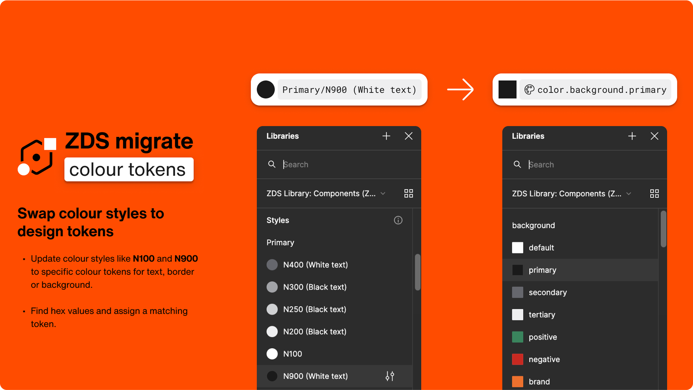
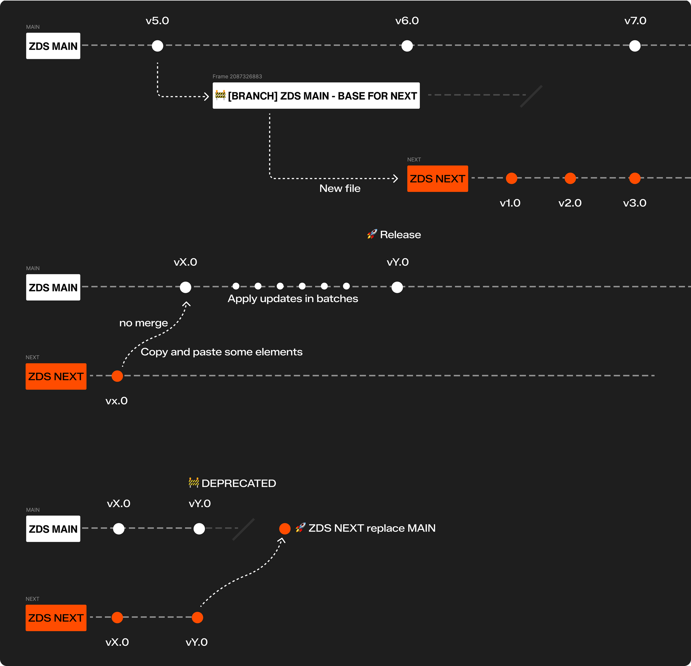
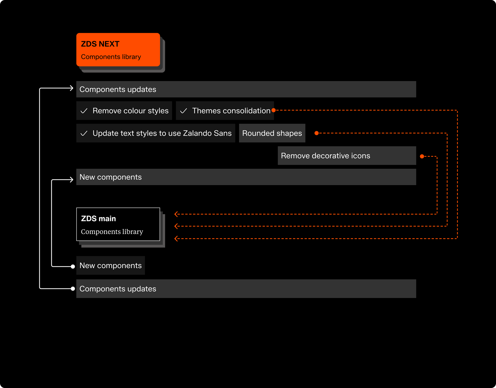

Scaling design at Zalando with Figma tooling
Leading the creation of components, plugins, and trainings that empowered 200+ designers and engineers.
As the volume of products, platforms and categories (sub-brands) grew at Zalando, our Figma ecosystem risked fragmentation, inconsistent libraries and slow adoption. This is a collection of different work addresseing that. From adaptive and responsive components, managing libraries versions and pocrecess to custom internal Figma plugins.

My role, achievements and outcomes
As the lead designer of our Figma tooling and library set at Zalando’s Design System team (ZDS), I defined, built and scaled the frameworks that empowered 80+ product and content designers to move faster, more consistently and with future-proof flexibility across Web, iOS, Android and Figma.
- Architected and maintained the primary set of Figma libraries, including design token definition (variables), component properties, themes, version branching and a change-log process to enable safe migration without disrupting consuming teams.
- Built two key plugins: one to automatically migrate legacy colour styles into tokens, and another to synchronise Figma variables and style-dictionary tokens—eliminating error-prone manual updates while supporting 8 modes across 3 themes during the Zalando brand refresh project.
- Developed typography variables and “200 % mode” support to let designers directly test resizing and accessibility states in Figma—enabling early usability validation before hand-off to code.
- Rolled out a three-season training programme for the design community (80+ designers) covering advanced features (AutoLayout, components, variables, prototyping). Delivered recorded modules integrated into our official training material in Workday and ran hands-on workshops on plugin-building and AI-augmented design workflows using Cursor, Claude code and Chat-gpt.
Figma plugins
3
Styles to variables, Tokens sync, Links organiser.
Recorded videos
12
I recorded videos for Figma training covering advanced features.
Designers trained
80+
I led a Level-up Figma training for product and content designers.
Migration plugin
Problem: Migrate styles to variables was a manual process that would consume hours form our designers day.
This tool helps migrating mocks using colour styles to variables (tokens). The plugin helped designers to save many hours of manual work and was widely used in the early days once we launched design tokens boosting their adoption from day one.
Tokens manager plugin
Problem: Keeping our design tokens in sync with our code repository was a challenging manual work. Having 8 modes for our 3 themes, making changes and updates was prone to errors, easy to miss and hard to track what was done. On top of that having multiple Style dictionary folders made impossible to keep track of the different versions.
This plugin sync our tokens repo with our variables in our Figma library. Beside this it can swap the tokens override to one of the different Style dictionary versions of our tokens that are currently used for the A/B tests that are set before the full launch the Zalando bran refresh. These dictionaries include new typography, updated and removed colours, adding border radius among other changes.
Figma advanced components
Problem: Outdated components would have multiple variants with not the right properties. Updating them to make use of tokens and 200% mode and a11y features was an impossible tasks.
I explored creating more flexible and fully responsive components. This was mainly done for some of our core e-comerce components like Product cards where we went from having 13 separate components with around 100 variants in total to 1 component and 6 variants. Also, our Showstopper component was redesigned to be fully responsive going form 48 to 4 variants.
ZDS Next library
Problem: We needed to reflect the incoming brand refresh features in our Figma libraries without disturbing the use ad state of the current library.
I setup the workflow to maintain a separate library and how the migration would happen. This was an invite access only to provide controlled teams explorations and to track adoption trough Figma analytics. This included communicating this to our design community, train my team on how to maitin the updates and do the migration once all the updates were released.

How features will be launched

Prev: Immersive dark mode & accessibility
This website was manually built with love and plain html, css & js.
No AI was used in the process.
Thanks for reading.